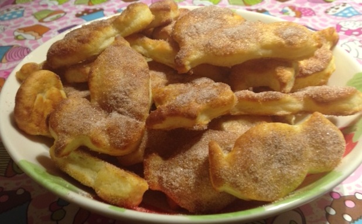

Simple Quark Cookies
Ingredients:
-
1 Pot of Quark
-
70g of Cold Margarine
-
1 Cup of Flour
-
1 tsp of Baking Powder
-
For Decoration: Any Sugar and Cinnamon

Method:
-
Mix together all of the ingredients for the batter until it has a very doughy consistency.
-
Roll the dough into a ball and wrap in cling-film.
-
Place the dough in the fridge for 1-2 hours.
-
Take out of the fridge and roll it out nicely.
-
Cut out any shapes that you want from the dough.
-
Repeat the previous step until all of the dough is used.
-
Lay out the shapes into a baking tray and sprinkle the cookies with sugar and cinnamon to decorate.
-
Place into the oven for 15 minutes until golden brown.